The goal of this notebook is to derivate the MKS equation from elastostatic equilibrium equation. Note that the MKS equation can be derivated from other partial differential equations.
Let 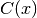 be the local stiffness tensor for a two phase material
with stiffness tensors 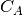 and 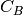. The stiffness tensor
at location  can be represented at a perturbation from a
reference stiffness tensor.
can be represented at a perturbation from a
reference stiffness tensor.
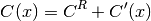
The strain field at location 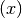 can also be defined in terms of a simular perturbation.
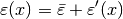
where  is the average strain and
is the average strain and
 is the local strain perturbation from
.
is the local strain perturbation from
.
The constitutive equation is therefore.
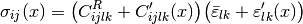
The equilibrium condition is defined below.
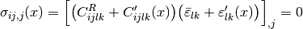
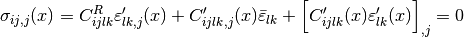
Let
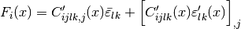
Using the definitation of 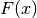 above, the equilibrium equation above can be rearranged in the form of an inhomogenous differential equation.
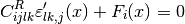
By using the relationship between strain and displacement, the equilibrium equation can be rewritten as follows.
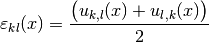
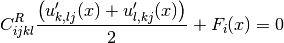
The solution to the displacements can be found using green’s functions.
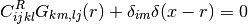
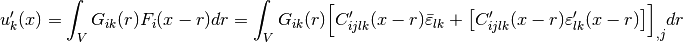
and
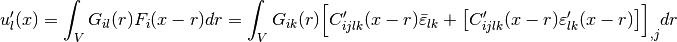
therefore the strain can also be found interns of green’s functions.
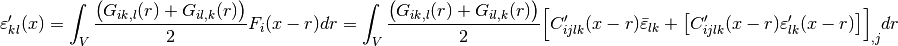
Note that the  terms depend on the reference medium
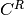.
terms depend on the reference medium
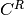.
The equation above can be recast with all of the derivatives on the green’s functions by integrating by parts.
In the equation above, the surface term tending to zero is a principal
value integral because of the singularity in the green’s functions at
 . As a result, the integrand is not differentiable.
Torquato shows that by excluding a sphere at the origin and using
integration by parts and the divergence theorem we can arrive at the
following equation [1].
. As a result, the integrand is not differentiable.
Torquato shows that by excluding a sphere at the origin and using
integration by parts and the divergence theorem we can arrive at the
following equation [1].
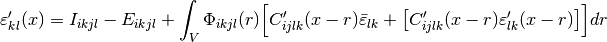
where
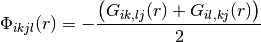
is the green’s function terms, and
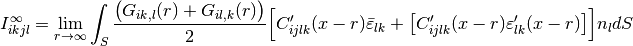
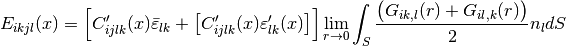
are the contribution from the surface integrals at and from the singularity. The MKS assumes periodic boundary conditions, there fore the contribution from infinty disappears.
Finally let
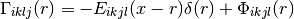
the strain can then be written in the following form.
![\varepsilon'_{kl}(x) = \int_V \Gamma_{ikjl}(r) \Big [C'_{ijlk}(x-r)\bar{\varepsilon}_{lk} + \big [C'_{ijlk}(x-r)\varepsilon'_{lk}(x-r)\big ]\Big ]dr](../_images/math/2a937958b38fff8331a39e4eea89cf3b6f9caaec.png)
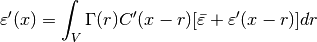
By recursively inserting 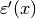 into the LHS of the equation, we get the following series.
As long as
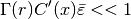
the series can be truncated after a few terms and still provide resonable accuracy.
Let
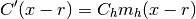
where the summation over  discribes all of the local states of
the stiffness tensor 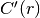.
discribes all of the local states of
the stiffness tensor 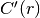.  is the microstructure
function and is an indicator function for each of the local states.
is the microstructure
function and is an indicator function for each of the local states.
Also let
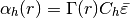
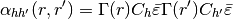
where again is the local state.
Plugging these definitations into Kroner’s expansion recasts the series in the following form.
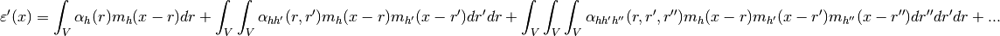
The discrete version of this equation is the MKS.
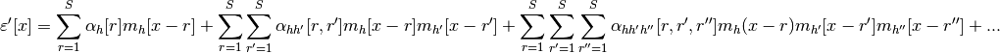
[1] Torquato, S., 1997. Effective stiffness tensor of composite media. I. Exact series expansions. J. Mech. Phys. Solids 45, 1421–1448.
[2] Brent L.Adams, Surya Kalidindi, David T. Fullwood. Microstructure Sensitive Design for Performance Optimization.
[3] David T. Fullwood, Brent L.Adams, Surya Kalidindi. A strong contrast homogenization formulation for multi-phase anisotropic materials.